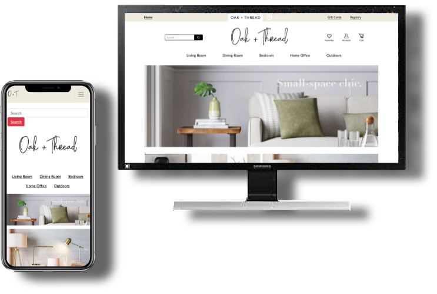

Oaks & Threads furniture is a feature of Target, this subset for the brand has being integrated but keep its own looks and feels. Straightforward and easy checkout process, the inspiration from target itself and their furniture line, the style guide inspired in the users a homey feeling while they navigate through, the color palette evokes to be in a place with a classy selection of accents, the feedback from the stakeholder was positive and created on them the decided effect for what we wanted to inspired on the users.
